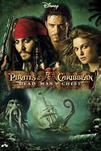

|
1.
Pirates of the Caribbean: The Curse of the Black Pearl
(2003)
2hr 23min | Action, Adventure, Fantasy
 8/10
 63
Official Trailer
|
William Turner, a resourceful young blacksmith, teams up with the eccentric pirate "Captain" Jack Sparrow to save his love, the Governor's daughter, Elizabeth Swann, who has been mistakenly captured by the clever and treacherous Barbossa, a former ally of Jack, to make a blood sacrifice so as to end the curse that has been casted upon him and his crew. Will and Jack steal a ship from the Royal Navy and arrive at Tortuga, a pirate port. There Jack meets his friend Joshamee Gibbs and with a buccaneer and "able bodied" crew, set sail to save Elizabeth and take back the Black Pearl. Meanwhile, Barbossa discovers that not Elizabeth's but someone else's blood was required for the sacrifice. Whose blood is it? |
Gore Verbinski
|
Johnny Depp
Geoffrey Rush
Orlando Bloom
Keira Knightley
Giles New
Angus Barnett
Mackenzie Crook
Kevin McNally
|
|  |
2.
Pirates of the Caribbean: Dead Man's Chest
(2006)
2hr 31min | Action, Adventure, Fantasy
7.3/10
53
Official Trailer
|
William and Elizabeth are sentenced to death for being in contact with Jack Sparrow. For saving Elizabeth, Will accepts to bring Jack's compass in exchange for his and Elizabeth's freedom. Meanwhile, Jack is being hunted by Davy Jones. Elizabeth escapes from prison to look for Will. Jack agrees to trade Will his compass if he finds a special key that will open a special chest. To find the key, Will goes aboard the Flying Dutchman, upon which he gets captured. He is reunited by his father on the Flying Dutchman. He finds the key and escapes the ship. Meanwhile, Jack gets Elizabeth to find the chest containing the heart of Davy Jones. Will and Elizabeth reunite on the island and open the chest and find the heart of Davy Jones. While Jack wants it to settle his debt to Jones, Will wants it to free his father and another person wants it for his own needs. Who is this mysterious person and what does he want to do with it? |
|
3.
Pirates of the Caribbean: At World's End
(2007)
2hr 49min | Action, Adventure, Fantasy
7.1/10
50
Official Trailer
|
After Elizabeth, Will, and Captain Barbossa rescue Captain Jack Sparrow from the land of the dead, they must face their foes, Davy Jones and Lord Cutler Beckett. Beckett, now with control of Jones' heart, forms a dark alliance with him in order to rule the seas and wipe out the last of the Pirates. Now, Jack, Barbossa, Will, Elizabeth, Tia Dalma, and crew must call the Pirate Lords from the four corners of the globe, including the infamous Sao Feng, to gathering. The Pirate Lords want to release the goddess Calypso, Davy Jones's damned lover, from the trap they sent her to out of fear, in which the Pirate Lords must combine the 9 pieces that bound her by ritual to undo it and release her in hopes that she will help them fight. With this, all pirates will stand together and will make their final stand for freedom against Beckett, Jones, Norrington, the Flying Dutchman, and the entire East India Trading Company. |
|
4.
Pirates of the Caribbean: On Stranger Tides
(2011)
2hr 17min | Action, Adventure, Fantasy
6.6/10
45
Official Trailer
|
In London, Captain Jack Sparrow (Johnny Depp) escapes from the soldiers that are chasing him and learns that an impostor is recruiting a crew and a vessel using his name. He meets the impersonator and finds that she actually is Angelica (Penélope Cruz), a woman that he had seduced in a convent in Seville. Jack is abducted and when he awakens aboard, the ship is sailing, Angelica tells him that her father, the pirate Blackbeard (Ian McShane), is cursed and he needs to find the legendary Ponce de Leon's Fountain of Youth to save his life. They force Jack, who knows the location of the fountain, to guide them. Meanwhile, Captain Hector Barbossa (Geoffrey Rush) is hired by King George (Richard Griffiths) to lead the British crew and dispute against the Spaniards, and Blackbeard, who arrives first to the fountain. But along their dangerous quest, they need to first find two chalices that belonged to Ponce de Leon and a tear of mermaid. |
Rob Marshall
|
 |
5.
Pirates of the Caribbean: Dead Men Tell No Tales
(2017)
2hr 9min | Action, Adventure, Fantasy
6.6/10
39
Official Trailer
|
Captain Jack Sparrow's (Johnny Depp's) luck has run out. Captain Salazar (Javier Bardem) has released the most deadly ghost pirates of the sea from the Devil's Triangle. Captain Salazar is the oldest villain of Jack Sparrow. The ghost pirates hunt every single pirate at sea, including Jack Sparrow. The only hope to survive this adventure is to collect the legendary Trident of Poseidon. This weapon is the most powerful weapon and the owner gets control of all seas. Is Jack going to collect this powerful weapon and can he ensure he is not going to get killed by Captain Salazar and his pirate ghosts? |
Espen Sandberg
Joachim Rønning
|